We use library() to access functionality provided by packages not included in the standard R installation. To install a new package, use the install.packages() function from the command line console.
install.packages("ISLR")
Start by loading that MASS and ISLR packages that we will be using throughtout this exercise
library(MASS)
library(ISLR)
To access the Boston housing dataset from the MASS package, use the attach() function
attach(Boston)
We can use head() and names() to take a look at the Boston dataset
head(Boston)
## crim zn indus chas nox rm age dis rad tax ptratio black
## 1 0.00632 18 2.31 0 0.538 6.575 65.2 4.0900 1 296 15.3 396.90
## 2 0.02731 0 7.07 0 0.469 6.421 78.9 4.9671 2 242 17.8 396.90
## 3 0.02729 0 7.07 0 0.469 7.185 61.1 4.9671 2 242 17.8 392.83
## 4 0.03237 0 2.18 0 0.458 6.998 45.8 6.0622 3 222 18.7 394.63
## 5 0.06905 0 2.18 0 0.458 7.147 54.2 6.0622 3 222 18.7 396.90
## 6 0.02985 0 2.18 0 0.458 6.430 58.7 6.0622 3 222 18.7 394.12
## lstat medv
## 1 4.98 24.0
## 2 9.14 21.6
## 3 4.03 34.7
## 4 2.94 33.4
## 5 5.33 36.2
## 6 5.21 28.7
names(Boston)
## [1] "crim" "zn" "indus" "chas" "nox" "rm" "age"
## [8] "dis" "rad" "tax" "ptratio" "black" "lstat" "medv"
Now, lets start with a simple linear model with lm()
lm.fit <- lm(medv ~ lstat)
Instead of attaching the Boston dataset first, we can also specify it directly in lm().
lm.fit <- lm(medv ~ lstat, data = Boston)
We can examine the fitted model, by simply typing its name.
lm.fit
##
## Call:
## lm(formula = medv ~ lstat, data = Boston)
##
## Coefficients:
## (Intercept) lstat
## 34.55 -0.95
The names() function lists the names of all variables store in the lm.fit model.
names(lm.fit)
## [1] "coefficients" "residuals" "effects" "rank"
## [5] "fitted.values" "assign" "qr" "df.residual"
## [9] "xlevels" "call" "terms" "model"
We can extract the coefficients estimated by lm() using the coef() function, and the confidence interval with the confint() function.
coef(lm.fit)
## (Intercept) lstat
## 34.5538409 -0.9500494
confint(lm.fit)
## 2.5 % 97.5 %
## (Intercept) 33.448457 35.6592247
## lstat -1.026148 -0.8739505
We use the predict() function to obtain prediction interval or confidence intervals for a given value of lstat
predict(lm.fit, data.frame(lstat = (c(5, 10, 15))), interval = "confidence")
## fit lwr upr
## 1 29.80359 29.00741 30.59978
## 2 25.05335 24.47413 25.63256
## 3 20.30310 19.73159 20.87461
predict(lm.fit, data.frame(lstat = (c(5, 10, 15))), interval = "prediction")
## fit lwr upr
## 1 29.80359 17.565675 42.04151
## 2 25.05335 12.827626 37.27907
## 3 20.30310 8.077742 32.52846
We can plot the variables lstat and medv using the plot() function, and overlay a regression line from our linear model using the abline() function.
plot(lstat, medv)
abline(lm.fit)
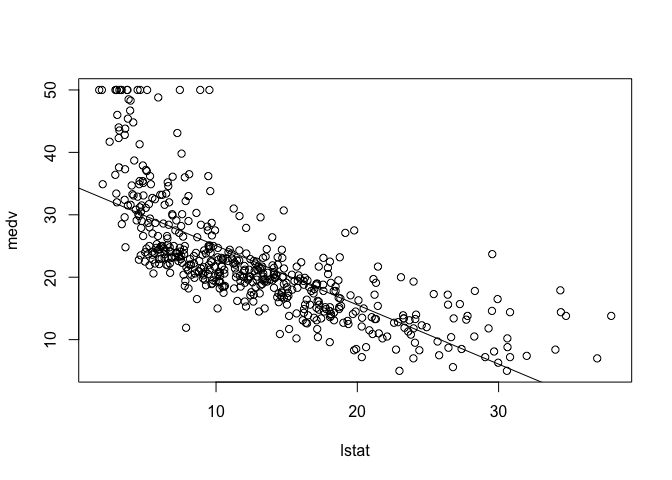
Experiment with different options for abline() by changing the line width and color.
plot(lstat, medv)
abline(lm.fit, lwd = 3)
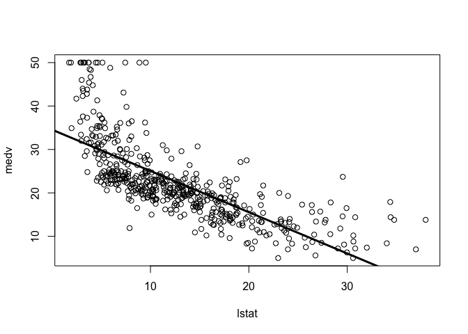
plot(lstat, medv)
abline(lm.fit, lwd = 3, col = "red")
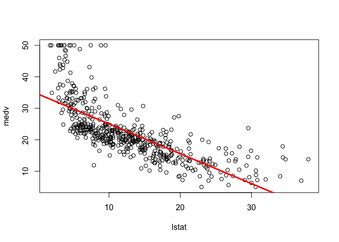
plot(lstat, medv, col = "red")
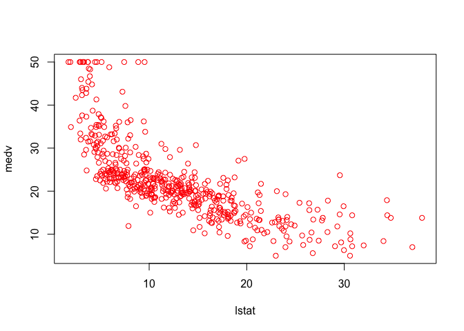
plot(lstat, medv, pch = 20)
plot(lstat, medv, pch = "+")
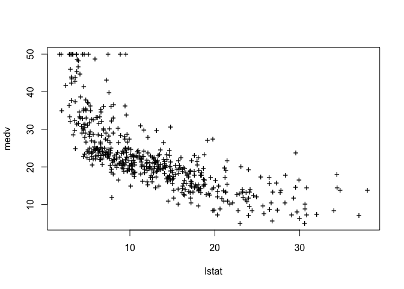
plot(1:20, 1:20, pch = 1:20)
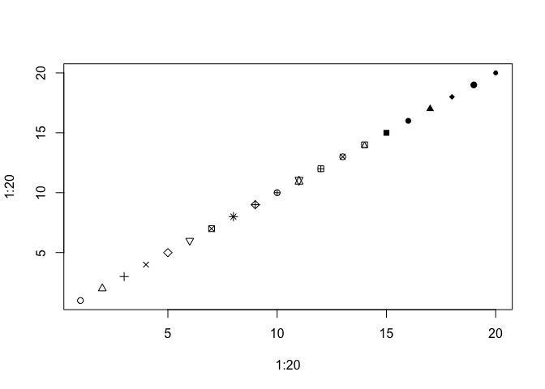
To create a grid of multiple subplots, use the par() function.
par(mfrow = c(2, 2))
plot(lm.fit)
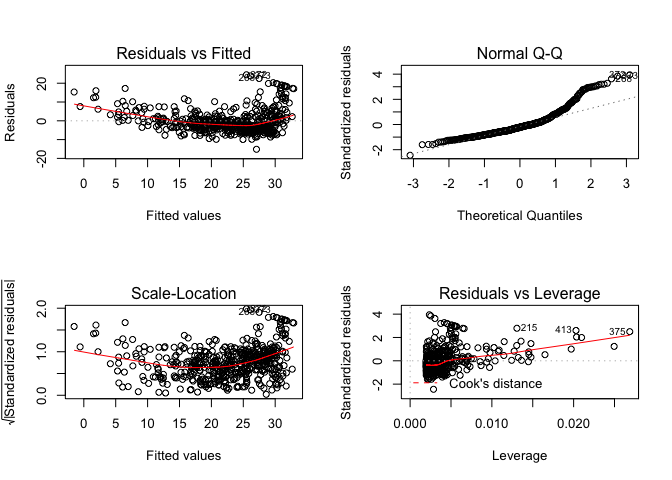
We can extract the residuals and studentized residuals from our linear model using residuals() and rstudent(), and plot them along with the predicted values.
plot(predict(lm.fit), residuals(lm.fit))
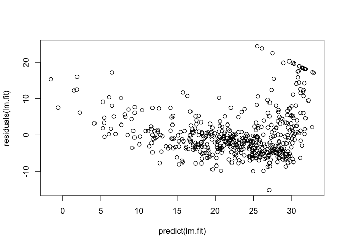
plot(predict(lm.fit), rstudent(lm.fit))
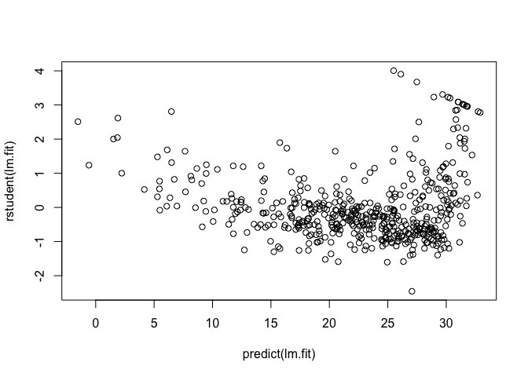
We can compute the influence matrix for the predictors in our fitted model using the hatvalues() function
plot(hatvalues(lm.fit))
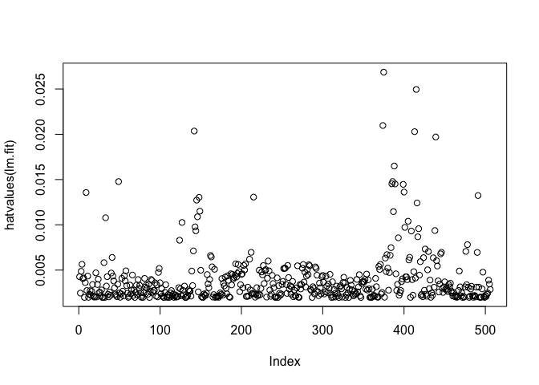
which.max(hatvalues(lm.fit))
## 375
## 375
The lm() can be used for fitting multiple regression models as well. In the following example, we include age in addition to lstata as predictors of of our response variable medv.
lm.fit <- lm(medv ~ lstat + age, data = Boston)
summary(lm.fit)
##
## Call:
## lm(formula = medv ~ lstat + age, data = Boston)
##
## Residuals:
## Min 1Q Median 3Q Max
## -15.981 -3.978 -1.283 1.968 23.158
##
## Coefficients:
## Estimate Std. Error t value Pr(>|t|)
## (Intercept) 33.22276 0.73085 45.458 < 2e-16 ***
## lstat -1.03207 0.04819 -21.416 < 2e-16 ***
## age 0.03454 0.01223 2.826 0.00491 **
## ---
## Signif. codes: 0 '***' 0.001 '**' 0.01 '*' 0.05 '.' 0.1 ' ' 1
##
## Residual standard error: 6.173 on 503 degrees of freedom
## Multiple R-squared: 0.5513, Adjusted R-squared: 0.5495
## F-statistic: 309 on 2 and 503 DF, p-value: < 2.2e-16
In a formula, a dot . can be used as a shorthand to include all variables from the Boston dataset as predictors.
lm.fit <- lm(medv ~ ., data = Boston)
summary(lm.fit)
##
## Call:
## lm(formula = medv ~ ., data = Boston)
##
## Residuals:
## Min 1Q Median 3Q Max
## -15.595 -2.730 -0.518 1.777 26.199
##
## Coefficients:
## Estimate Std. Error t value Pr(>|t|)
## (Intercept) 3.646e+01 5.103e+00 7.144 3.28e-12 ***
## crim -1.080e-01 3.286e-02 -3.287 0.001087 **
## zn 4.642e-02 1.373e-02 3.382 0.000778 ***
## indus 2.056e-02 6.150e-02 0.334 0.738288
## chas 2.687e+00 8.616e-01 3.118 0.001925 **
## nox -1.777e+01 3.820e+00 -4.651 4.25e-06 ***
## rm 3.810e+00 4.179e-01 9.116 < 2e-16 ***
## age 6.922e-04 1.321e-02 0.052 0.958229
## dis -1.476e+00 1.995e-01 -7.398 6.01e-13 ***
## rad 3.060e-01 6.635e-02 4.613 5.07e-06 ***
## tax -1.233e-02 3.760e-03 -3.280 0.001112 **
## ptratio -9.527e-01 1.308e-01 -7.283 1.31e-12 ***
## black 9.312e-03 2.686e-03 3.467 0.000573 ***
## lstat -5.248e-01 5.072e-02 -10.347 < 2e-16 ***
## ---
## Signif. codes: 0 '***' 0.001 '**' 0.01 '*' 0.05 '.' 0.1 ' ' 1
##
## Residual standard error: 4.745 on 492 degrees of freedom
## Multiple R-squared: 0.7406, Adjusted R-squared: 0.7338
## F-statistic: 108.1 on 13 and 492 DF, p-value: < 2.2e-16
The Variance Inflation Factors (VIF) can be caculated using the vif() function from the Companion to Applied Regression or car package. You can install the car package using install.packages() if it is not already installed.
install.packages("ISLR")
library(car)
vif(lm.fit)
## crim zn indus chas nox rm age dis
## 1.792192 2.298758 3.991596 1.073995 4.393720 1.933744 3.100826 3.955945
## rad tax ptratio black lstat
## 7.484496 9.008554 1.799084 1.348521 2.941491
To exclude specific variables from the list of predictors, we can use the - notation. In the following example, all variables except age are included in the linear fit model.
lm.fit1 <- lm(medv ~ . - age, data = Boston)
summary(lm.fit1)
##
## Call:
## lm(formula = medv ~ . - age, data = Boston)
##
## Residuals:
## Min 1Q Median 3Q Max
## -15.6054 -2.7313 -0.5188 1.7601 26.2243
##
## Coefficients:
## Estimate Std. Error t value Pr(>|t|)
## (Intercept) 36.436927 5.080119 7.172 2.72e-12 ***
## crim -0.108006 0.032832 -3.290 0.001075 **
## zn 0.046334 0.013613 3.404 0.000719 ***
## indus 0.020562 0.061433 0.335 0.737989
## chas 2.689026 0.859598 3.128 0.001863 **
## nox -17.713540 3.679308 -4.814 1.97e-06 ***
## rm 3.814394 0.408480 9.338 < 2e-16 ***
## dis -1.478612 0.190611 -7.757 5.03e-14 ***
## rad 0.305786 0.066089 4.627 4.75e-06 ***
## tax -0.012329 0.003755 -3.283 0.001099 **
## ptratio -0.952211 0.130294 -7.308 1.10e-12 ***
## black 0.009321 0.002678 3.481 0.000544 ***
## lstat -0.523852 0.047625 -10.999 < 2e-16 ***
## ---
## Signif. codes: 0 '***' 0.001 '**' 0.01 '*' 0.05 '.' 0.1 ' ' 1
##
## Residual standard error: 4.74 on 493 degrees of freedom
## Multiple R-squared: 0.7406, Adjusted R-squared: 0.7343
## F-statistic: 117.3 on 12 and 493 DF, p-value: < 2.2e-16
We can also update an existing fit with the update() function and specifiying a new formula.
lm.fit1 <- update(lm.fit, ~. - age)
The : and * operators are used to specify interaction terms between variables. The : operator includes just the interaction term between the specified variables as predictor, while the * operator includes the interaction term as well as the variables themselves. In the following example, lstat * age is equivalent to lstat + age + lstat:age
summary(lm(medv ~ lstat * age, data = Boston))
##
## Call:
## lm(formula = medv ~ lstat * age, data = Boston)
##
## Residuals:
## Min 1Q Median 3Q Max
## -15.806 -4.045 -1.333 2.085 27.552
##
## Coefficients:
## Estimate Std. Error t value Pr(>|t|)
## (Intercept) 36.0885359 1.4698355 24.553 < 2e-16 ***
## lstat -1.3921168 0.1674555 -8.313 8.78e-16 ***
## age -0.0007209 0.0198792 -0.036 0.9711
## lstat:age 0.0041560 0.0018518 2.244 0.0252 *
## ---
## Signif. codes: 0 '***' 0.001 '**' 0.01 '*' 0.05 '.' 0.1 ' ' 1
##
## Residual standard error: 6.149 on 502 degrees of freedom
## Multiple R-squared: 0.5557, Adjusted R-squared: 0.5531
## F-statistic: 209.3 on 3 and 502 DF, p-value: < 2.2e-16
The lm() function can also be non-linear transformations such as quadratic or cubic terms. Terms in the formula raised to a power with ^ must be wrapped inside a call to I() to prevent interpretation and treated as is.
lm.fit2 <- lm(medv ~ lstat + I(lstat^2))
summary(lm.fit2)
##
## Call:
## lm(formula = medv ~ lstat + I(lstat^2))
##
## Residuals:
## Min 1Q Median 3Q Max
## -15.2834 -3.8313 -0.5295 2.3095 25.4148
##
## Coefficients:
## Estimate Std. Error t value Pr(>|t|)
## (Intercept) 42.862007 0.872084 49.15 <2e-16 ***
## lstat -2.332821 0.123803 -18.84 <2e-16 ***
## I(lstat^2) 0.043547 0.003745 11.63 <2e-16 ***
## ---
## Signif. codes: 0 '***' 0.001 '**' 0.01 '*' 0.05 '.' 0.1 ' ' 1
##
## Residual standard error: 5.524 on 503 degrees of freedom
## Multiple R-squared: 0.6407, Adjusted R-squared: 0.6393
## F-statistic: 448.5 on 2 and 503 DF, p-value: < 2.2e-16
To examine the analysis of variance (ANOVA) for one or more models, we use the anova().
lm.fit <- lm(medv ~ lstat)
anova(lm.fit, lm.fit2)
## Analysis of Variance Table
##
## Model 1: medv ~ lstat
## Model 2: medv ~ lstat + I(lstat^2)
## Res.Df RSS Df Sum of Sq F Pr(>F)
## 1 504 19472
## 2 503 15347 1 4125.1 135.2 < 2.2e-16 ***
## ---
## Signif. codes: 0 '***' 0.001 '**' 0.01 '*' 0.05 '.' 0.1 ' ' 1
par(mfrow = c(2, 2))
plot(lm.fit2)
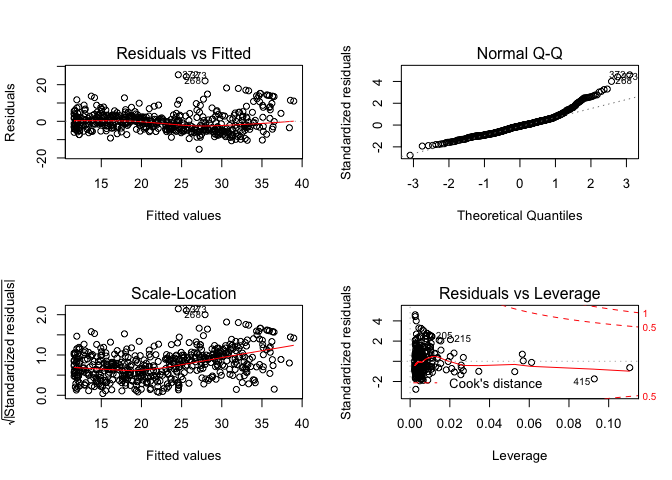
lm.fit5 <- lm(medv ~ poly(lstat, 5))
summary(lm.fit5)
##
## Call:
## lm(formula = medv ~ poly(lstat, 5))
##
## Residuals:
## Min 1Q Median 3Q Max
## -13.5433 -3.1039 -0.7052 2.0844 27.1153
##
## Coefficients:
## Estimate Std. Error t value Pr(>|t|)
## (Intercept) 22.5328 0.2318 97.197 < 2e-16 ***
## poly(lstat, 5)1 -152.4595 5.2148 -29.236 < 2e-16 ***
## poly(lstat, 5)2 64.2272 5.2148 12.316 < 2e-16 ***
## poly(lstat, 5)3 -27.0511 5.2148 -5.187 3.10e-07 ***
## poly(lstat, 5)4 25.4517 5.2148 4.881 1.42e-06 ***
## poly(lstat, 5)5 -19.2524 5.2148 -3.692 0.000247 ***
## ---
## Signif. codes: 0 '***' 0.001 '**' 0.01 '*' 0.05 '.' 0.1 ' ' 1
##
## Residual standard error: 5.215 on 500 degrees of freedom
## Multiple R-squared: 0.6817, Adjusted R-squared: 0.6785
## F-statistic: 214.2 on 5 and 500 DF, p-value: < 2.2e-16
In addition to polynomial transformations, the formula in a linear fit model can also include anova() transformations as shown in the following example.
summary(lm(medv ~ log(rm), data = Boston))
##
## Call:
## lm(formula = medv ~ log(rm), data = Boston)
##
## Residuals:
## Min 1Q Median 3Q Max
## -19.487 -2.875 -0.104 2.837 39.816
##
## Coefficients:
## Estimate Std. Error t value Pr(>|t|)
## (Intercept) -76.488 5.028 -15.21 <2e-16 ***
## log(rm) 54.055 2.739 19.73 <2e-16 ***
## ---
## Signif. codes: 0 '***' 0.001 '**' 0.01 '*' 0.05 '.' 0.1 ' ' 1
##
## Residual standard error: 6.915 on 504 degrees of freedom
## Multiple R-squared: 0.4358, Adjusted R-squared: 0.4347
## F-statistic: 389.3 on 1 and 504 DF, p-value: < 2.2e-16
In this section, we will use the Carseats dataset from the ISLR package. Similar to how we used the Boston dataset, we can make the Carseats dataset available to us with the attach() function.
attach(Carseats, warn.conflicts = FALSE)
head(Carseats)
## Sales CompPrice Income Advertising Population Price ShelveLoc Age
## 1 9.50 138 73 11 276 120 Bad 42
## 2 11.22 111 48 16 260 83 Good 65
## 3 10.06 113 35 10 269 80 Medium 59
## 4 7.40 117 100 4 466 97 Medium 55
## 5 4.15 141 64 3 340 128 Bad 38
## 6 10.81 124 113 13 501 72 Bad 78
## Education Urban US
## 1 17 Yes Yes
## 2 10 Yes Yes
## 3 12 Yes Yes
## 4 14 Yes Yes
## 5 13 Yes No
## 6 16 No Yes
names(Carseats)
## [1] "Sales" "CompPrice" "Income" "Advertising" "Population"
## [6] "Price" "ShelveLoc" "Age" "Education" "Urban"
## [11] "US"
When dealing with qualitative or categorial variable, R automatically generates dummy variables for us.
lm.fit <- lm(Sales ~ . + Income:Advertising + Price:Age, data = Carseats)
summary(lm.fit)
##
## Call:
## lm(formula = Sales ~ . + Income:Advertising + Price:Age, data = Carseats)
##
## Residuals:
## Min 1Q Median 3Q Max
## -2.9208 -0.7503 0.0177 0.6754 3.3413
##
## Coefficients:
## Estimate Std. Error t value Pr(>|t|)
## (Intercept) 6.5755654 1.0087470 6.519 2.22e-10 ***
## CompPrice 0.0929371 0.0041183 22.567 < 2e-16 ***
## Income 0.0108940 0.0026044 4.183 3.57e-05 ***
## Advertising 0.0702462 0.0226091 3.107 0.002030 **
## Population 0.0001592 0.0003679 0.433 0.665330
## Price -0.1008064 0.0074399 -13.549 < 2e-16 ***
## ShelveLocGood 4.8486762 0.1528378 31.724 < 2e-16 ***
## ShelveLocMedium 1.9532620 0.1257682 15.531 < 2e-16 ***
## Age -0.0579466 0.0159506 -3.633 0.000318 ***
## Education -0.0208525 0.0196131 -1.063 0.288361
## UrbanYes 0.1401597 0.1124019 1.247 0.213171
## USYes -0.1575571 0.1489234 -1.058 0.290729
## Income:Advertising 0.0007510 0.0002784 2.698 0.007290 **
## Price:Age 0.0001068 0.0001333 0.801 0.423812
## ---
## Signif. codes: 0 '***' 0.001 '**' 0.01 '*' 0.05 '.' 0.1 ' ' 1
##
## Residual standard error: 1.011 on 386 degrees of freedom
## Multiple R-squared: 0.8761, Adjusted R-squared: 0.8719
## F-statistic: 210 on 13 and 386 DF, p-value: < 2.2e-16
To examine the coding for the qualitive variables, we can use the contrasts() function.
contrasts(ShelveLoc)
## Good Medium
## Bad 0 0
## Good 1 0
## Medium 0 1
We can define our own functions to wrap a set of R commands in a single call. In the following example, we define a LoadLibraries function that loads the ISLR and MASS packages.
LoadLibraries <- function() {
library(ISLR)
library(MASS)
}
The function then simply be called just like any other function supplied with R.
LoadLibraries()